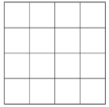

Unggah dataset dari folder yang hanya berisi gambar dengan salah satu format berikut: .png, .jpg, .jpeg, atau .bmp. (folder yang mengandung file yang tidak termasuk dalam ekstensi tersebut tidak akan diterima).
Setiap gambar dalam dataset akan memasuki tahap pra-proses yang meliputi resizing menjadi ukuran 256 kali 256 piksel. Selanjutnya, gambar yang sudah di-resize akan diubah menjadi matriks yang berisi nilai RGB tiap piksel.
Untuk tahap pra-proses selanjutnya terdapat dua proses utama, yaitu CBIR dengan parameter warna dan CBIR dengan parameter tekstur. Untuk CBIR dengan parameter warna, matriks RGB akan diubah menjadi matriks HSV. Selanjutnya, matriks HSV akan dibagi menjadi 4 kali 4 blok lalu dihitung nilai rata-rata HSV untuk setiap blok. Nilai rata-rata HSV setiap blok akan diubah ke dalam vektor dengan tiga komponen dan disimpan dalam file .txt.
Untuk CBIR dengan parameter tekstur, matriks RGB gambar akan diubah menjadi Gray Level Co-Occurrence Matrix (GLCM) yang diproses sehingga hasil akhirnya berupa matriks simetri yang dinormalisasi. Matriks tersebut kemudian dihitung nilai contrast, homogeneity, dan entropy-nya, lalu disimpan sebagai vektor dengan tiga komponen dalam file .txt.
Unggah gambar query (selain file dengan ekstensi yang terdaftar pada nomor 1 tidak akan diterima).
Pilih parameter CBIR, dengan pilihan parameter warna atau parameter tekstur.
Server akan membaca cache yang sudah dibuat pada bagian 3.1 langkah 2 dan 3. Jika pada langkah 6 pengguna memilih parameter warna, maka yang dibaca oleh server adalah baris pertama pada file cache. Jika pengguna memilih parameter tekstur, maka yang dibaca oleh server adalah baris kedua.
Jika pengguna memilih parameter warna, gambar query akan melalui proses yang sama dengan pra-proses gambar dalam dataset, kemudian dihitung nilai cosine similarity antar setiap blok dalam gambar query dan setiap gambar dalam dataset, lalu dihitung rata-rata cosine similarity dengan setiap gambar dalam dataset dan diurutkan berdasarkan nilainya.
Jika pengguna memilih parameter tekstur, gambar query akan melalui proses yang sama dengan pra-proses gambar dalam dataset, kemudian dihitung cosine similarity antara gambar query dengan setiap gambar dalam dataset dan diurutkan berdasarkan nilainya.
Server akan menampilkan gambar-gambar dengan hasil perhitungan cosine similarity di atas 60% dan diurutkan dari tertinggi ke terendah pada website.
Ubah gambar menjadi matriks yang berisi vektor yang memiliki komponen nilai RGB.
Ubah semua vektor yang menjadi elemen matriks menjadi nilai HSV.
Bagi gambar menjadi 4x4 blok seperti berikut.
Buat list untuk menyimpan vektor fitur rata-rata HSV.
Untuk setiap blok, hitung rata-rata nilai H, rata-rata nilai S, dan rata-rata nilai V dan simpan sebagai vektor lalu dimasukkan ke list.
Lakukan langkah 1 sampai 5 untuk gambar query dan semua gambar yang ada di dataset. Kemudian, list vektor rata-rata nilai HSV disimpan sebagai cache.
Hitung cosine similarity dari setiap blok gambar di antara kedua gambar. Perlu dicatat bahwa ada total 16 nilai cosine similarity yang bermakna ada 1 nilai cosine similarity untuk setiap blok dan harus dibandingkan dengan blok yang sama.
Hitung rata-rata dari nilai cosine similarity dari 16 nilai cosine similarity tersebut.
Kemiripan gambar dengan gambar query dalam persen adalah Similarity (%) = (cos*100)% dengan cos adalah cosine similarity rata-rata yang didapatkan dari langkah 8.
Ubah gambar menjadi matriks yang berisi vektor yang memiliki komponen nilai RGB
Ubah nilai RGB pada matriks menjadi grayscale
Ubah matriks grayscale menjadi Gray Level Co-occurrence Matrix (GLCM) berukuran 256 kali 256. Elemen-elemen yang dicek adalah elemen yang bersebelahan secara horizontal dan vertikal.
Ubah matriks GLCM menjadi bentuk simetrinya dengan cara menambahkan matriks GLCM dan matriks GLCM yang sudah di-transpose.
Ubah menjadi matriks simetri menjadi bentuk normalized-nya dengan membagi nilai setiap elemen dengan jumlah setiap elemen dalam matriks simetri.
Hitung nilai contrast, homogeneity, dan entropy menggunakan matriks normalized dan simpan ke dalam list.
Lakukan langkah 1 sampai 6 untuk gambar query dan semua gambar yang ada di dataset. Kemudian, list vektor nilai contrast, homogeneity, dan entropy disimpan sebagai cache.
Hitung nilai cosine similarity antara gambar query dengan setiap gambar dalam dataset menggunakan vektor nilai contrast, homogeneity, dan entropy.
Kemiripan gambar dengan gambar query dalam persen adalahSimilarity (%) = (cos *100)% dengan cos adalah cosine similarity yang didapatkan dari langkah 8.